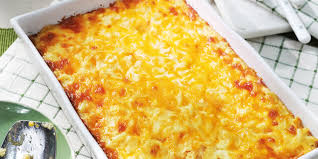
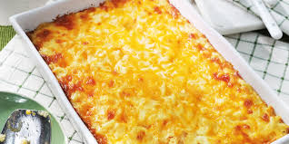

Mac & Cheese
 

- prep: 10 mins
- cook: 30 mins
- total: 40 mins
- Servings: 4
- Yield: 4 servings
Description
Ingredients
- 1 (8 ounce) box elbow macaroni
- ¼ cup butter
- ¼ cup all-purpose flour
- ½ teaspoon salt
- ground black pepper to taste
- 2 cups milk
- 3 cups shredded Cheddar cheese
Directions
- Step 1
Bring a large pot of lightly salted water to a boil. Cook elbow macaroni in the boiling water,
stirring occasionally until cooked through but firm to the bite, 8 minutes. Drain.
- Step 2
Melt butter in a saucepan over medium heat; stir in flour, salt, and pepper until smooth,
about 5 minutes. Slowly pour milk into butter-flour mixture while continuously stirring
until mixture is smooth and bubbling, about 5 minutes. Add 2 cups of Cheddar cheese to milk
mixture and stir until cheese is melted, 2 to 4 minutes.
- Step 3
Fold macaroni into cheese sauce until coated.
Following are optional
- Step 4
Put the coated mac and cheese into and oven-proof bowl and put 1 cup of Cheddar cheese in a layer on top.
set oven to grill and place the bowl insde for 10min
- Step 5
Allow Mac and Cheese to cool and Enjoy